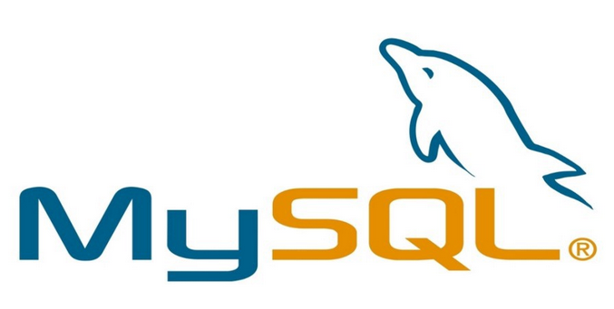
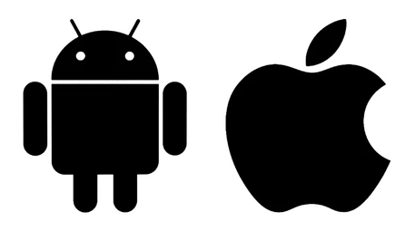

The website is to be built in / with HTML and CSS code, so knowledge of and proficiency in both HTML and CSS would be required. The mock website will not be handling data so can be hosted via GitHub.
To allow for more mobile friendly access to the service, a mobile application can also be created. A few different development options are available for mobile applications. A “native” mobile app (developed to be specific to a single platform or mobile operating system), a cross-platform mobile app (designed to run on various mobile platforms and operating systems without needing to be recoded for specific, native platforms) or a web mobile app (seemingly “native” mobile apps that are opened from a mobile platform but run in a web browser) (DJ Wardynski, 2020).
The finished website and mobile apps would likely require to be connected to at least one database, which would store the information for both the job applicants and employers. A variety of free database programs are available such as MySQL, MicrosoftSQL, PostgreSQL, MongoDb, CouchDb and DynamoDB (Aaron Walker, 2017) however depending on the size and storage requirements a commercial (paid) database solution may be required. Querying data from the database (and updating the database with user information) would require a built database and knowledge of SQL to program the queries. MySQL would likely be a suitable selection, based on being free-to-use, having a high degree of scalability and regarded as being highly secure (Tony Branson, 2016).
Source: Medium
Accessing the database and displaying the returned data on the website would likely require both knowledge of, and programming skills in, a server-side scripting language such as PHP, Python, Ruby, C# or JavaScript (NodeJS) (MDN Web Docs, n.d)- Python is free to use and is well regarded as a server-side language and has additional frameworks like Django and Pyramid to assist in development and integration with the database (Julie Korsun, 2021).
Programming would also be required for sending communications / emails to the website users to confirm events like when their applications have been submitted and advise when are being reviewed by an employer or recruiter etc. Further website programming would be needed for managing user requests and interactions such as document management (uploading or deleting a CV or certification etc), managing the types of account communication / notifications sent received, updating account profiles and password reset requests. The website would also need to either link users to outside websites or have embedded information for education or certification requirements for the role being advertised.
The different operating systems often use different programming languages and different IDEs (integrated development environments)- Android applications are often programmed in Java, Kotlin or C# (GeeksForGeeks, 2021) and often created via the Android Studio IDE. Many IOS apps are programmed in Apple’s native language Swift (Apple, 2021) however other development options include Java or C# and usually created via the Xcode IDE.
Source: Shutterstock
For an application to be cross platform compatible, it would likely require the programming to be done in a cross-compatible language such as C# and via specific IDE such as Xamarin (Microsoft, 2021) or .NET Multi-platform App UI (MAUI) (David Britch, 2021) . Another option may be Adobe Phone Gap as it also supports coding with HTML5 and CSS (DJ Wardynski, 2020), which may help to reduce production costs or complexity by utilising the coding from the website itself. Producing a cross compatible mobile app would help to reach more users and likely reduce production costs (when compared to creating two “native” apps for Android and IOS) however may come at the cost of reduced performance and potentially lower security (DJ Wardynski, 2020 ). If the project was to go ahead, for best performance, ease of updating and application security, two native mobile applications would be developed (programmed in Java for Android and Swift for IOS).
For a functional and live website, IT security would also need to be considered, due to the data and documents etc being collected from applicants and employers. Protocols such as HTTPS (Hypertext Transfer Protocol Secure), SSL (Secure Sockets Layer) and SFTP (Secure File Transfer Protocol) would be required for the website and default website access privileges would need to be set for each type of user (Drew Hendricks, 2021). Consideration would likely need to be given to using secure web hosting services who may incorporate firewalls, anti-virus and possibly even more specialised website monitoring security software into their hosting services (Kevin Wood, 2021).
The mobile app will also have security requirements- all data will need to be encrypted, app users should be required to undertake authentication processes, create strong alpha numeric passwords and perform regular password changes. The application programming will likely need to be thoroughly tested for bugs and security flaws and consideration given to have further program / code hardening performed by outside cybersecurity professionals (Jaykishan Panchal, 2018).
Most of the team has fledging skills in HTML and maybe some basic Python programming however Sam is likely the most experienced, as he also has some knowledge of Java programming. As the project is likely to be limited to mock-ups, we would not foresee any reason that these could not be completed on laptop / desktop computers.
Back to home page